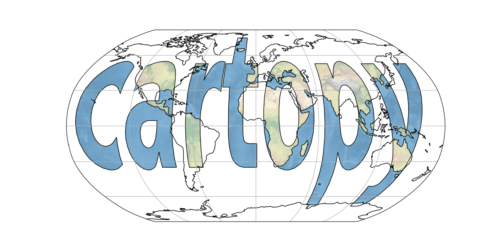

Note
Click here to download the full example code
Cartopy Logo¶
The actual code to produce cartopy’s logo.
import cartopy.crs as ccrs
import matplotlib.pyplot as plt
import matplotlib.textpath
import matplotlib.patches
from matplotlib.font_manager import FontProperties
import numpy as np
def main():
fig = plt.figure(figsize=[12, 6])
ax = fig.add_subplot(1, 1, 1, projection=ccrs.Robinson())
ax.coastlines()
ax.gridlines()
# generate a matplotlib path representing the word "cartopy"
fp = FontProperties(family='Bitstream Vera Sans', weight='bold')
logo_path = matplotlib.textpath.TextPath((-175, -35), 'cartopy',
size=1, prop=fp)
# scale the letters up to sensible longitude and latitude sizes
logo_path._vertices *= np.array([80, 160])
# add a background image
im = ax.stock_img()
# clip the image according to the logo_path. mpl v1.2.0 does not support
# the transform API that cartopy makes use of, so we have to convert the
# projection into a transform manually
plate_carree_transform = ccrs.PlateCarree()._as_mpl_transform(ax)
im.set_clip_path(logo_path, transform=plate_carree_transform)
# add the path as a patch, drawing black outlines around the text
patch = matplotlib.patches.PathPatch(logo_path,
facecolor='none', edgecolor='black',
transform=ccrs.PlateCarree())
ax.add_patch(patch)
plt.show()
if __name__ == '__main__':
main()
Total running time of the script: ( 0 minutes 2.064 seconds)